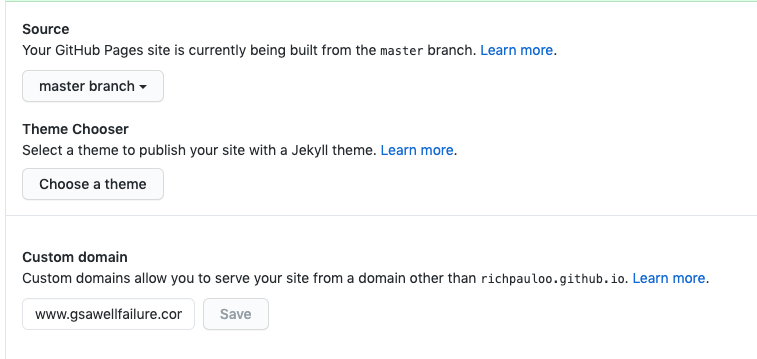
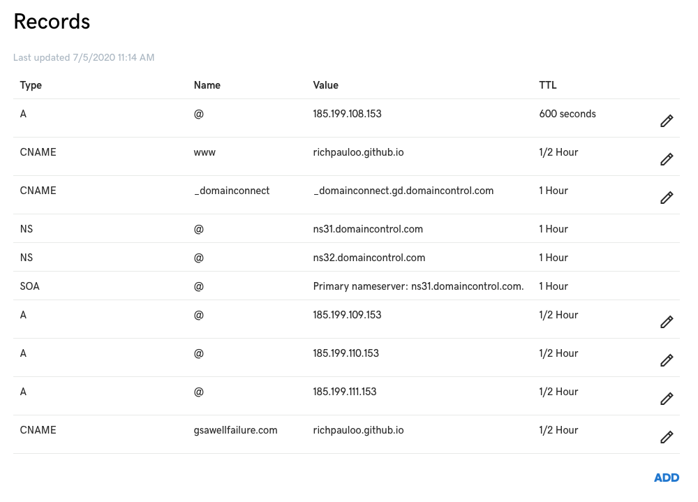
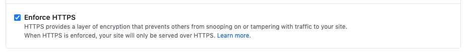

How to link a custom domain to Github Pages with HTTPS
By Rich
November 15, 2019
John Martin, “Destruction of Pompeii and Herculaneum” 1821
Whenever I host a Jekyll site on GH pages, I usually spend an extra hour or two on tiny details that I want to record in this post, which is a boilied down set of instructions to add a custom domain (e.g.,
www.mydomain.com) to a Github Pages site that may be either your default github site (username.github.io), or a project page in another repo username.github.io/my-project.
Step 1
Start with a boilerplate Jekyll theme to host your site or project page (
here’s a recent one at the time of writing). Change the contents of the CNAME file to www.mydomain.com
Next, in the Github repo Settings, add your custom domain into the “Custom domain” box, ensuring that it’s preceeded by the www subdomain:

Make sure you do Step 1 before Step 2, for security reasons outlined in the Github docs.
Step 2
In your DNS Management console, delete any CNAME record that points www to @, and add a CNAME record with the following parameters:
type = CNAME
name = www
value = username.github.io.

Meaning: This tells your DNS to point www.mydomain.com requests towards the site hosted at username.github.io. Set the TTL (time to live) to an hour or less.
Next add 4 separate A records with the following information:
type = A
name = @
value = IP

For IPs, use the Github IP addresses that host your username.github.io site. As of writing (2019-11-15) these IPs are:
185.199.108.153
185.199.109.153
185.199.110.153
185.199.111.153
The values might have changed since the time of writing. See the offical docs for the most up-to-date values.
Meaning: A records connect the custom domain (hosted by your DNS) to the actual IP addresses where your site lives on a Github server.
Step 3
Back in the Github repo settings, do hard reset, and click “Enforce HTTPS”:

Navigate to mydomain.com to see your github page! Be patient if it doesn’t immediately show due to DNS propogration.
Here are three resources I found helpful while doing this:
- Posted on:
- November 15, 2019
- Length:
- 2 minute read, 351 words
- See Also: